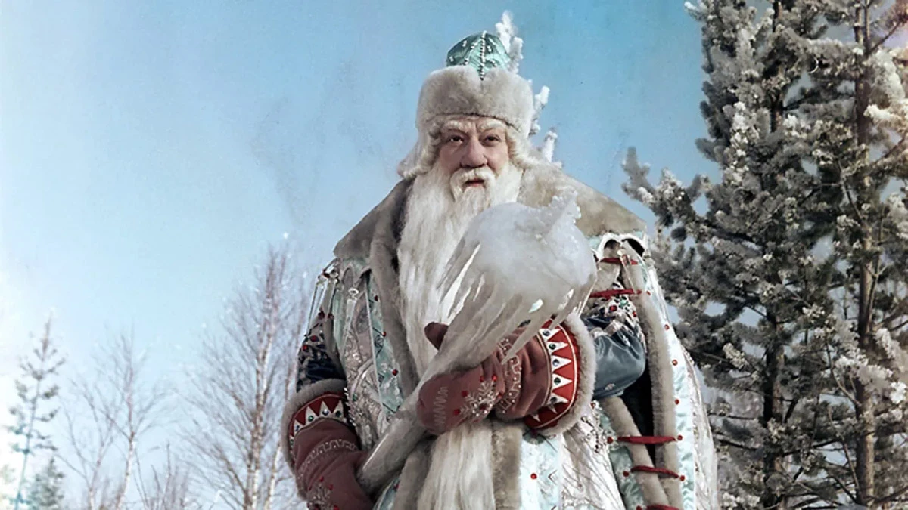
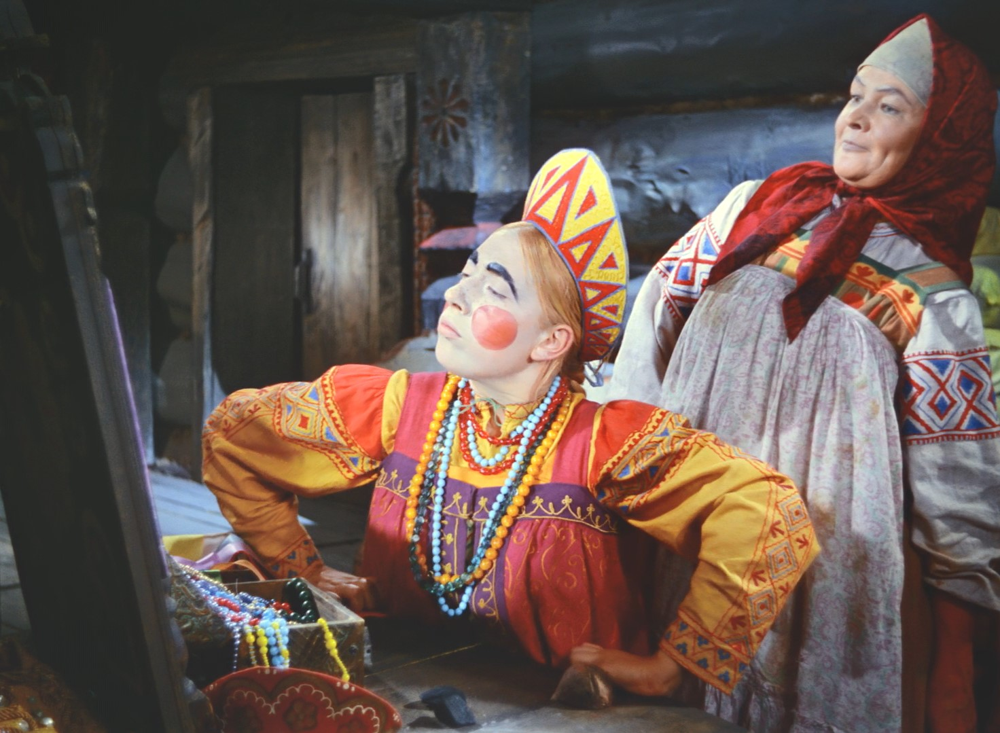
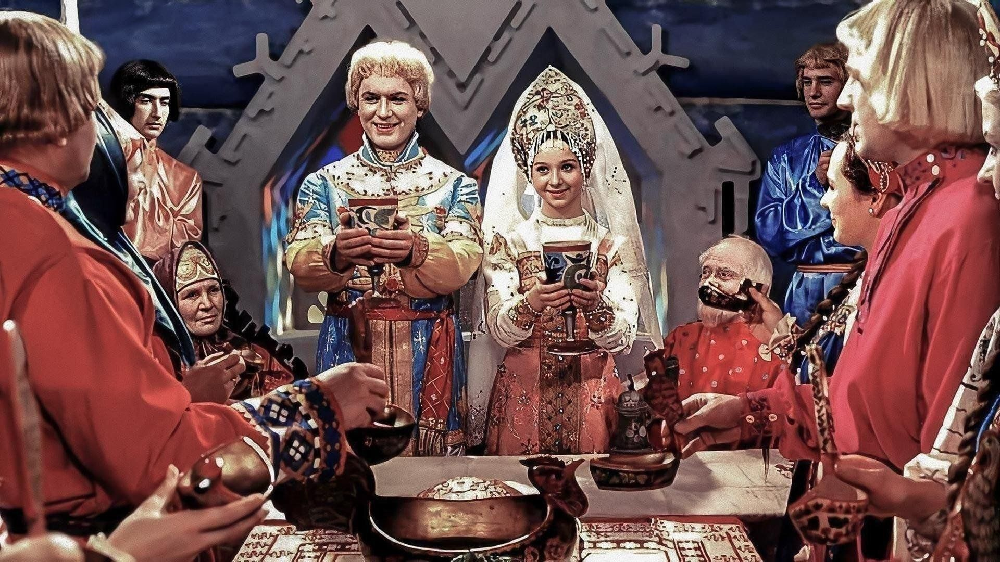
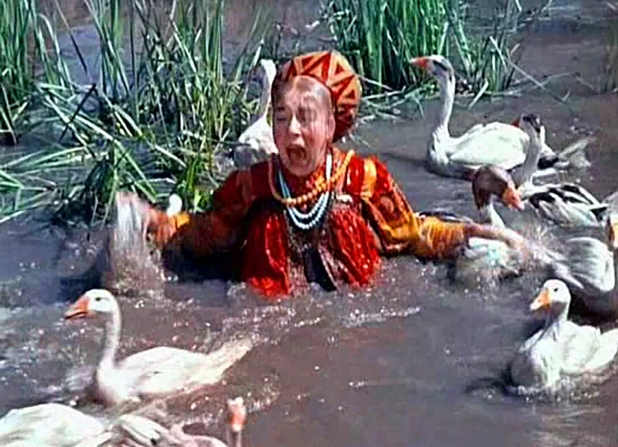

Живало-бывало, – жил дед да с другой женой. У деда была дочка и у бабы была дочка. Все знают, как за мачехой жить: перевернёшься – бита и недовернёшься – бита. А родная дочь что ни сделает – за все гладят по головке: умница. Падчерица и скотину поила-кормила, дрова и воду в избу носила, печь топила, избу мела ещё до свету… Ничем старухе не угодить – всё не так, всё худо.
Ветер хоть пошумит, да затихнет, а старая баба расходится – не скоро уймётся. Вот мачеха и придумала падчерицу со свету сжить. – Вези, вези её, старик, – говорит мужу, – куда хочешь, чтобы мои глаза её не видали! Вези её в лес, на трескучий мороз. Старик затужил, заплакал, однако делать нечего, бабы не переспоришь. Запряг лошадь: – Садись, милая дочь, в сани. Повёз бездомную в лес, свалил в сугроб под большую ель и уехал.
Девушка сидит под елью, дрожит, озноб её пробирает. Вдруг слышит – невдалеке Морозко по ёлкам потрескивает, с ёлки на ёлку поскакивает, пощёлкивает. Очутился на той ели, под которой девица сидит, и сверху её спрашивает:
– Тепло ли тебе, девица?
– Тепло, Морозушко, тепло, батюшка.

Морозко стал ниже спускаться, сильнее потрескивает, пощёлкивает:
– Тепло ли тебе, девица? Тепло ли тебе, красная?
Она чуть дух переводит:
– Тепло, Морозушко, тепло, батюшка.
Морозко ещё ниже спустился, пуще затрещал, сильнее защёлкал:
– Тепло ли тебе, девица? Тепло ли тебе, красная? Тепло ли тебе, лапушка?
Девица окостеневать стала, чуть-чуть языком шевелит:
– Ой, тепло, голубчик Морозушко!
Тут Морозко сжалился над девицей, окутал её тёплыми шубами, отогрел пуховыми одеялами. А мачеха по ней уж поминки справляет, печёт блины и кричит мужу:
– Ступай, старый хрыч, вези свою дочь хоронить!
Поехал старик в лес, доезжает до того места, – под большою елью сидит его дочь, весёлая, румяная, в собольей шубе, вся в золоте, в серебре, и около – короб с богатыми подарками. Старик обрадовался, положил всё добро в сани, посадил дочь, повёз домой. А дома старуха печёт блины, а собачка под столом:
– Тяф, тяф! Старикову дочь в злате, в серебре везут, а старухину замуж не берут.
Старуха бросит ей блин:
– Не так тявкаешь! Говори: «Старухину дочь замуж берут, а стариковой дочери косточки везут…»
Собака съест блин и опять:
– Тяф, тяф! Старикову дочь в злате, в серебре везут, а старухину замуж не берут.
Старуха блины ей кидала и била её, а собачка – всё своё…
Cтарик посадил старухину дочь в сани, повёз её в лес на то же место, вывалил в сугроб под высокой елью и уехал.
Старухина дочь сидит, зубами стучит. А Морозко по лесу потрескивает, с ёлки на ёлку поскакивает, пощёлкивает, на старухину дочь поглядывает:
– Тепло ли тебе, девица?
А она ему:
– Ой, студёно! Не скрипи, не трещи, Морозко…
Морозко стал ниже спускаться, пуще потрескивать, пощёлкивать:
– Тепло ли тебе, девица? Тепло ли тебе, красная?
– Ой, руки, ноги отмёрзли! Уйди, Морозко…
Ещё ниже спустился Морозко, сильнее приударил, затрещал, защёлкал:
– Тепло ли тебе, девица? Тепло ли тебе, красная?
– Ой, совсем застудил! Сгинь, пропади, проклятый Морозко!
Рассердился Морозко да так хватил, что старухина дочь окостенела. Чуть свет старуха посылает мужа:
– Запрягай скорее, старый хрыч, поезжай за дочерью, привези её в злате-серебре…
Старик уехал. А собачка под столом:
– Тяф! Тяф! Старикову дочь женихи возьмут, а старухиной дочери в мешке косточки везут.
Старуха кинула ей пирог:
– Не так тявкаешь! Скажи: «Старухину дочь в злате-серебре везут…»
А собачка – всё своё:
– Тяф, тяф! Старухиной дочери в мешке косточки везут…
Заскрипели ворота, старуха кинулась встречать дочь. Рогожу отвернула, а дочь лежит в санях мёртвая. Заголосила старуха, да поздно.
 | Персонаж | Характеристика |
| Старик | Слабохарактерный, добрый, мягкий, любящий дочь, но неспособный противостоять злой жене. |
| Старуха | Злая, завистливая, жестокая, корыстная, несправедливая, алчная. Получает по заслугам за свою злобу. |
| Старикова дочь | Кроткая, трудолюбивая, терпеливая, добрая, незлобивая, покорная судьбе, уважительная. Награждена за свою добродетель. |
| Старухина дочь | Ленивая, грубая, злая, высокомерная, жадная. Наказана за свою надменность и дурной характер. |
| Морозко | Справедливый, суровый, но милосердный. Вознаграждает добродетель и наказывает зло. Проверяет героев на стойкость и нравственные качества. |
| Собака | Мудрая, справедливая, проницательная, не подкупная. Знает правду и предсказывает судьбу. |